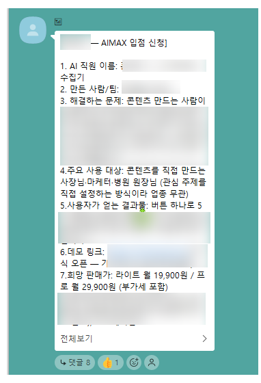
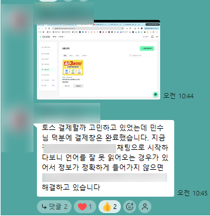

AIMAX· 메이크패밀리 창업 프로그램
AI를 배우지 마세요
AI 직원을 만드세요
툴을 배우는 자리가 아닙니다.
내 대신 일하는 직원을 하나 완성하고,
그걸 파는 데까지 갑니다.
이 프로그램을 세 줄로
- 2주 연속 일요일 매회 5시간 오프라인에서 내 AI 직원을 하나 완성해 나옵니다.
- 이후 5개월간 매일 · 매주 · 매달 붙어서 파는 데까지 갑니다.
- 내 상품이 아직 없어도 패밀리 파트너스로 먼저 파는 경험부터 합니다.
먼저 다녀간 사람들
배우고 끝난 게 아니라
만들어서 나갔습니다
참여 전
AI로 무엇을 할 수 있는지 막연하게만 알고 있었고,
어떻게 활용해야 할지 감이 잡히지 않아 막막한 마음이 있었습니다.
듣고 나서
복잡한 과정 없이도 아이디어를 빠르게 구현할 수 있다는 점이 인상 깊었습니다.
정보를 생성하는 수준을 넘어 실제로 작동하는 형태까지 만들어낼 수 있다는 걸
체감했습니다.
지금
기술적인 장벽 때문에 시도하지 못했던 것들도
이제는 충분히 도전해볼 수 있겠다는 생각이 들었습니다.
고스 님 · 3기 수강 · 2026.07.07 카페 후기글에서 발췌
후기와 결과물은 메이크패밀리 카페에 그대로 공개되어 있습니다.
닉네임과 날짜까지 확인하실 수 있습니다.
90%
수강생이 본인 AI 서비스·직원
제작에 성공했습니다
같은 걸 따라 만드는 과정이 아닙니다.
각자의 문제를 푸는 직원을 만듭니다.
1~3기가 실제로 만든 것
수강생이 만든 AI 직원이
이미 팔리고 있습니다

기수별 결과물 — 회의록 · 일정관리 · ERP · 상품소식 · 카드뉴스.
업종도 목적도 전부 다릅니다.

입점 신청
만든 직원을 판매까지 연결합니다

결제창 연동
팔 수 있는 상태까지 직접 붙입니다
1기
챙겨톡 김실장
youagent · 26.07.20
2기
1인 미디어용 인터뷰 제작 시스템
리키안 · 26.07.19
2기
장비온 장비관리 프로그램
리키안 · 26.07.19
1기
SNS 마케팅 자동화
하자하자 · 26.07.14
1기
성경 교독 어플 maju reading
김시아 · 26.07.08
1기
까먹지마
blingkkami · 26.07.07
1기
AI직원 상수씨
blingkkami · 26.07.07
2기
ReturnGuard
AION · 26.06.30
1기
Qoo10 상품소식기
youagent · 26.06.29
1기
자영업자 사장님을 위한 홍보직원
Q type · 26.06.29
2기
MeetingNote_AI 회의록
AION · 26.06.17
2기
전국 캐디전용 플랫폼 캐디온
불꾼 · 26.06.13
2기
화장품 AI 상품페이지 기획자
세리13982 · 26.06.14
2기
정부지원사업 매칭 · 사업계획서 작성
예림 · 26.06.11
부동산 · 골프장 · 회의록 · 가계부 · 정부지원사업 · 상품페이지까지
업종도 목적도 전부 다릅니다.
정원 10명짜리 기수에서 매번 이만큼 나옵니다.
배우고 끝나는 과정이 아닙니다. 만들고, 올리고, 파는 데까지 갑니다.
왜 소수인원만 받는가
떠먹여 주는 강의가 아니라
옆에 앉아 같이 만드는 자리입니다
정원 10명
한 명씩 붙어서 구조를 만들어야 하니 늘리지 않습니다.
1기 · 2기 · 3기 전부 정원 전에 마감됐습니다.
무엇을 받게 되나
다섯 가지가 세트로 갑니다
메이크패밀리가 이미 판매 중인 AI 서비스를 같이 팝니다.
내 상품이 아직 없어도 먼저 파는 경험부터 시작할 수 있습니다.
지금부터 이 다섯 가지를 하나씩 펼쳐 보여드립니다.
아마 요즘 이러실 겁니다
AI가 돈이 된다는 건
이제 다들 압니다
유튜브에도 인스타에도 AI로 월 몇백 벌었다는 얘기가 넘칩니다.
무료 강의도 듣고, 유료도 몇 개 결제해 봤습니다.
그런데 정작 내 통장은 그대로입니다.
뭔가 배우긴 했는데 어디에 써야 할지를 모르겠습니다.
회사는 언제까지 다닐 수 있을지 모르겠고,
퇴근하고 또 일하는 부업은 이미 해봤는데 오래 못 갔습니다.
"돈이 되는 건 알겠는데..
나는 뭘 만들 줄 모르는데.."
당신이 아직 이 페이지를
읽고 있는 이유는
단 한 번도 생산자가
되어 본 적이 없기 때문입니다
사는 쪽에만 있었지, 파는 쪽에 서 본 적이 없습니다.
AI 많이 써보셨죠
글도 써봤고 이미지도
만들어봤고 자동화도 해봤습니다
그래서, 돈은 벌리셨나요?
문제는 AI가 아닙니다. 돈 되는 구조를 모르기 때문입니다.
그래서 접근을 바꿨습니다
AI를 도구로 쓰지 않고
직원으로 만들었습니다
지금까지
AI를
배운다
쓸 줄은 아는데 매번 내가 붙어 있어야 합니다. 배움이 쌓여도 수익은 그대로입니다.
여기서는
AI 직원을
만든다
한 번 만들면 계속 돕니다. 그리고 그 직원 자체를 상품으로 팝니다.
이미 돌아가고 있습니다
저희가 먼저 만들어
직접 돌리고 있는 직원입니다
CONVERSION
예리씨
- 하루 10개 글 생성
- 검색 노출 구조 적용
- 블로그 유입 자동 생성
ACQUISITION
현주씨
- 키워드 기반 고객 수집
- 관심사 기반 타겟 확보
- 영업 대상 리스트 생성
이건 저희 직원입니다. 이제 당신의 직원을 만들 차례입니다.
커리큘럼 · 오프라인 2주
첫 달에 만들고
5개월 동안 팔아봅니다
첫 달은 2주 연속 일요일, 매회 5시간 오프라인입니다.
만드는 것과 파는 것을 회차로 나누지 않고 2주 내내 같이 진행합니다.
이후 5개월은 매일·매주·매달 리듬으로 붙습니다.
- 사전 질문지 전달 & 작성
- 바이브코딩 A to Z 교육
- 어떤 직원을 만들지 결정
- 바이브코딩 실습 시작
- 나만의 AI 직원 MVP 제작
- 제작한 AI 직원 수익화 설계
- 실제 AI 서비스 마케팅 사례
- SNS 마케팅 실습 (유입 · 전환 설계)
만들어 놓고 나중에 파는 법을 배우는 구성이 아닙니다.
만드는 동시에 파는 구조를 같이 얹습니다.
2주 연속 일요일이라 흐름이 끊기지 않습니다.
오프라인 이후 5개월
혼자 두지 않는 방식이
이렇게 짜여 있습니다
막힌 걸 다음 주까지 들고 있지 않습니다.
매일 도는 것이 따로 있고, 그 위에 매주·매달 점검이 얹힙니다.
매일
- SNS 마케팅 활동 점검 & 피드백
- 복붙하면 되는 콘텐츠 제공 파트너스
- 바이브코딩 질의응답 바로 답변
매주
- 월요일 AI 작업물 점검 & 피드백
- 수 또는 금 마케팅 라이브 피드백 파트너스
- 요청 시 1:1 수익화 점검 컨설팅
매달
- 전 과정 복습 라이브 1회
- 마지막 주 토요일 AI 강연 참석권
- AI 서비스 수익 정산 파트너스
매월 복습 라이브 · 5개 주제
개발 · 바이브코딩
- 프로젝트 폴더 완성 — 개발 가능한 상태 만들기
- 핵심기능 1개 & 오류 해결 — 팔리는 상태 만들기
- 버전관리 및 배포 링크 점검 — 실전 배포하기
- API key · 비용 · 보안 체크 — 안전한 운영 상태 만들기
- 데모 영상 · 상세페이지 · 고객 피드백 — 판매 제안하기
파트너스는 저희가 이미 팔고 있는 AI 서비스를 같이 파는 구조입니다.
내 상품이 아직 없어도 콘텐츠를 받아 팔고, 매달 수익을 정산받습니다.
"근데 이것도 결국
녹화본만 주는 거 아니야?"
의심하시는 게 정상입니다
그런 강의가 실제로
늘고 있으니까요
결제만 받고 녹화본을 던져두는 곳이 많습니다.
좋은 얘기 실컷 듣고 정작 막혔을 때 물어볼 사람이 없는 구조라면,
들인 돈과 시간이 그대로 사라집니다. 그래서 저희는 이렇게 만들었습니다.
비개발자가 포기하는 자리는 기능 구현이 아니라 오류가 났을 때입니다.
그래서 오류 질문은 주 단위로 모아 받지 않고 매일 바로 답변합니다.
혼자 구글링하지 않게 만드는 게 이 프로그램의 설계입니다.
먼저 확인하세요
아무나 받지 않습니다
이런 분
- AI로 실제 수익을 만들고 싶은 분
- 자동화 구조를 직접 갖고 싶은 분
- 만들어만 두고 못 팔아본 분
- 강의는 충분히 들었고 결과가 필요한 분
- 5개월을 끝까지 갈 의지가 있는 분
이런 분껜 비추천
- 정보만 듣고 끝낼 분
- 대신 만들어 주기를 기대하는 분
- 단기간 수익 보장을 원하는 분
- 2주 연속 일요일 참석이 어려운 분
- 이미 판매까지 돌아가는 구조가 있는 분
월 1,000만 원을 보장하는 프로그램이 아닙니다.
평생 수강생이자 소비자였던 당신을 생산자로 바꾸는 과정입니다.
누가 진행하나
직접 만들어 팔고 있는 사람이
그 구조를 그대로 엽니다
나민수
AIMAX · 메이크패밀리
저도 처음엔 배우기만 했습니다. 글도 써보고 이미지도 만들어보고 자동화도 해봤는데
정작 돈은 안 벌렸습니다. 툴이 부족한 게 아니라 파는 구조가 없다는 걸 나중에 알았습니다.
그래서 직접 AI 직원을 만들어 사업에 붙였고, 지금은 그 직원들을 상품으로도 팔고 있습니다.

소비자에서 생산자로
오프라인 2주온라인 5개월전 과정 VOD정원 10명
지원하기
참가비와 일정은 결제창에서 확인하실 수 있습니다.
기수가 올라갈수록 인상되며, 매 기수 조기 마감됩니다.